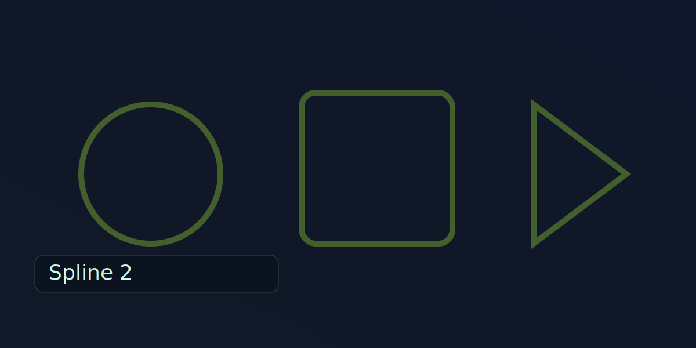
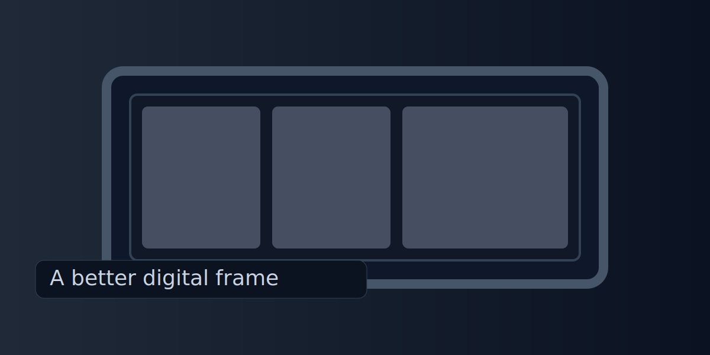

Skip to main content
Experiments
A place that I can test new ideas
Spline
view_in_ar
3D Scan

Spline 2
view_in_ar
3D Scan

A better digital frame
construction
Work in progress
developer_board
Hardware